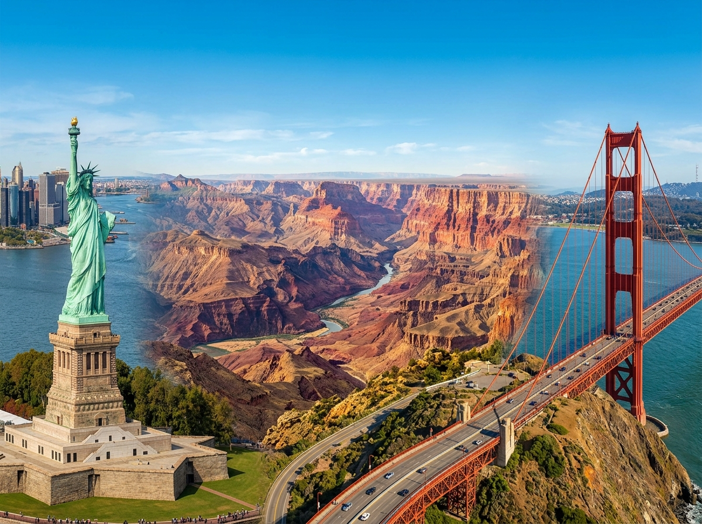
Hier stehen die wichtigsten Daten zu deinem Land. In der App baust du daraus deinen eigenen Steckbrief.
| Hauptstadt | Washington, D.C. (nicht New York, das ist nur die größte Stadt) |
| Kontinent | Nordamerika |
| Sprache | Englisch (viele Menschen sprechen auch Spanisch) |
| Währung | US-Dollar |
| Einwohner | rund 340 Millionen Menschen |
| Fläche | etwa 9,8 Millionen Quadratkilometer, fast 28 Mal so groß wie Deutschland |
| Großer Fluss | der Mississippi, einer der längsten Flüsse der Welt |
| Nachbarländer | Kanada im Norden und Mexiko im Süden |
In den USA gibt es viele berühmte Orte. Diese vier solltest du kennen.
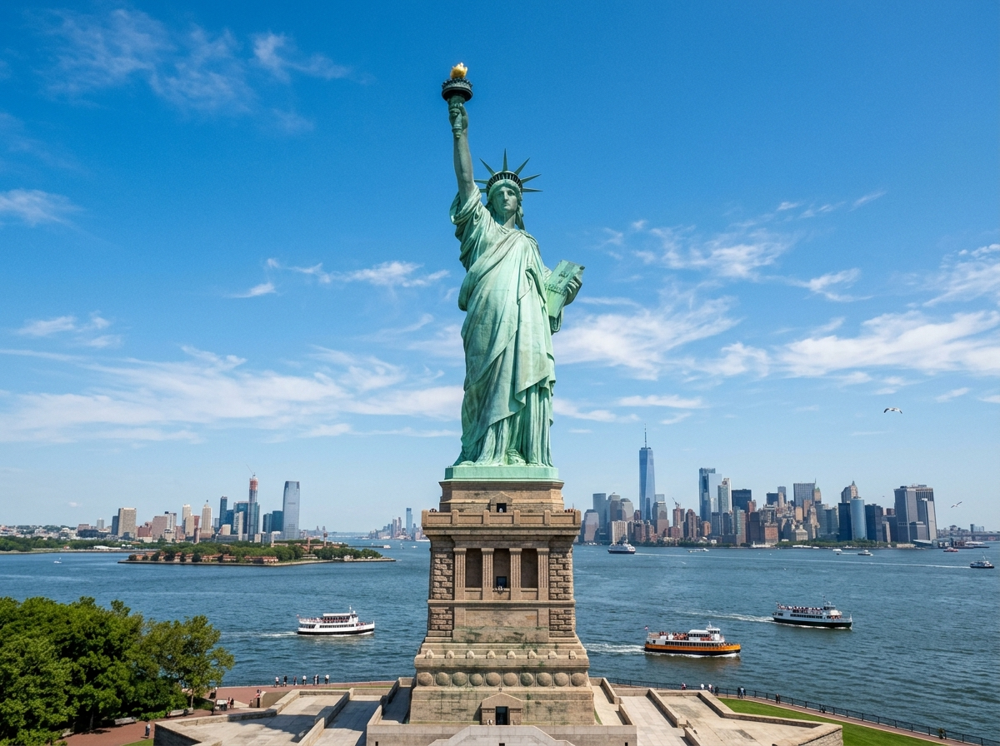
FreiheitsstatueDie Freiheitsstatue ist eine riesige grüne Figur und steht auf einer Insel bei New York. Sie hält eine Fackel hoch in die Luft. Die Statue ist ein Zeichen für Freiheit und gibt vielen Menschen Hoffnung. Schon von Weitem kann man sie sehen.
Grüne Wörter für die Appgrüne StatueInselNew YorkFackelFreiheit
Grand CanyonDer Grand Canyon ist eine gewaltige Schlucht im Westen der USA. Sie ist fast zwei Kilometer tief. Ein Fluss hat sie über Millionen Jahre tief in den roten Fels gegraben. Heute kommen viele Menschen, um hineinzuschauen.
Grüne Wörter für die Apptiefe Schluchtroter Felsein Flusszwei Kilometer tiefsehr groß
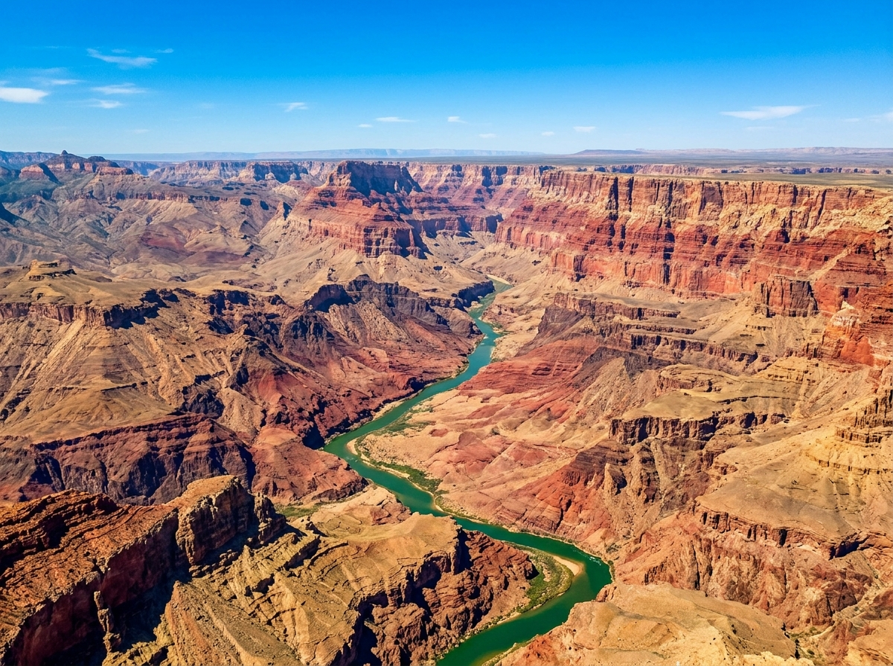
Golden-Gate-BrückeDie Golden-Gate-Brücke steht in der Stadt San Francisco. Sie ist eine lange Hängebrücke und leuchtet in einem kräftigen Rot-Orange. Über die Brücke fahren jeden Tag viele Autos. Oft zieht Nebel über das Wasser unter ihr.
Grüne Wörter für die AppHängebrückeSan Franciscorot-orangeüber dem WasserNebel
Mount RushmoreIn den Mount Rushmore sind die Gesichter von vier Präsidenten in den Berg gemeißelt. Die riesigen Köpfe sind aus festem Stein. Künstler haben viele Jahre daran gearbeitet. Jedes Gesicht ist so hoch wie ein Haus.
Grüne Wörter für die Appvier Präsidentenin den Berg gemeißeltaus Steinriesige Köpfeberühmt
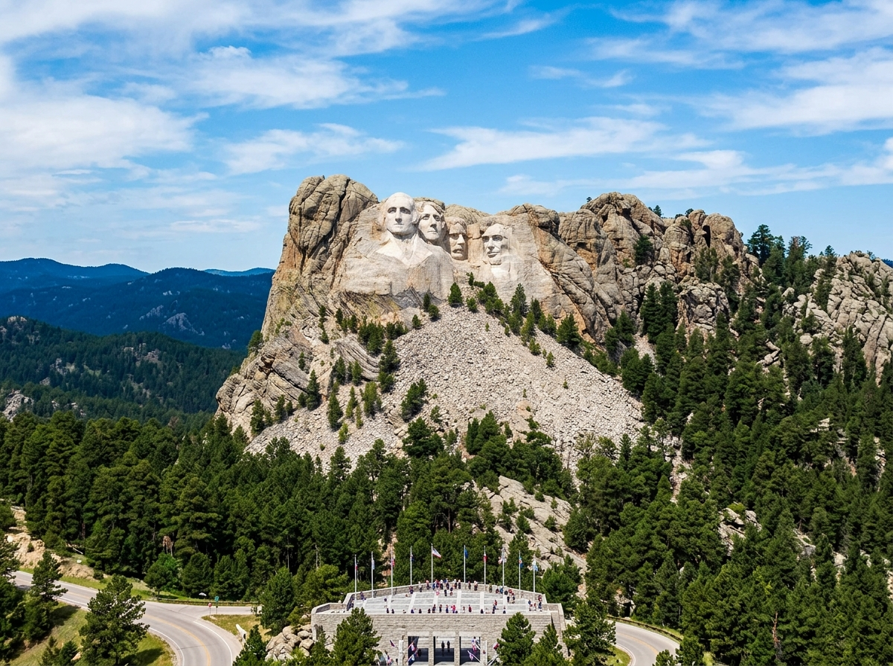
In den USA leben Tiere, die du bei uns nicht in der Natur findest.
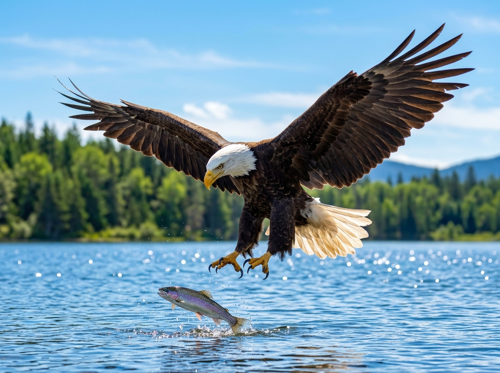
WeißkopfseeadlerDer Weißkopfseeadler ist das Nationaltier der USA. Er hat einen schneeweißen Kopf und braune Federn am Körper. Mit seinen scharfen Krallen fängt er Fische aus dem Wasser. Der große Greifvogel ist auf vielen Wappen und Münzen zu sehen.
Grüne Wörter für die Appweißer KopfGreifvogelNationaltierscharfe Krallenfängt Fische
BisonDer Bison ist ein riesiges, wildes Rind mit zottigem Fell und einem großen Kopf. Früher lebten viele Millionen Bisons in den weiten Graslandschaften. Heute gibt es wieder Herden in den Nationalparks. Ein Bison ist sehr schwer und stark.
Grüne Wörter für die Appwildes Rindzottiges Fellriesiggroße HerdenGrasland
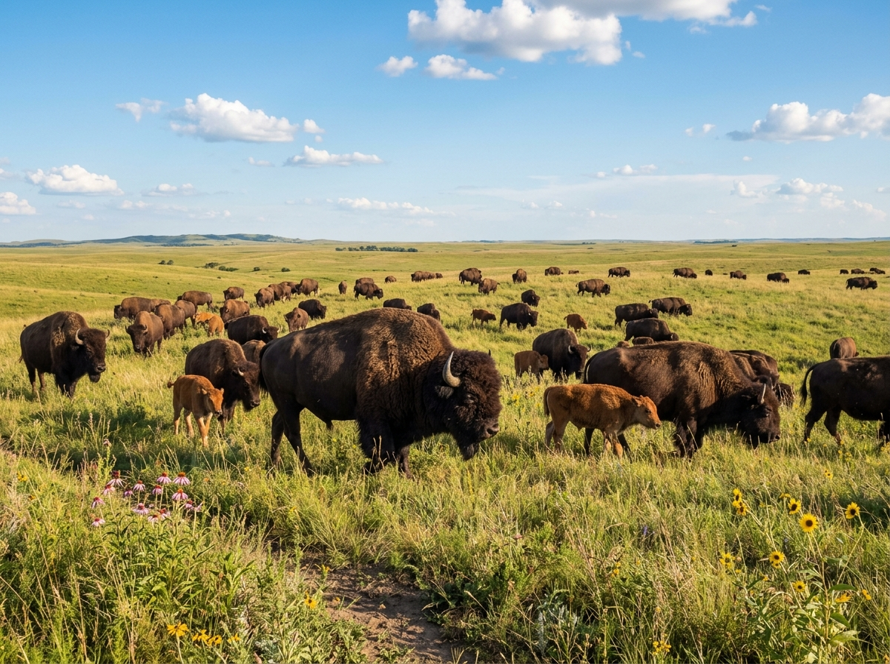
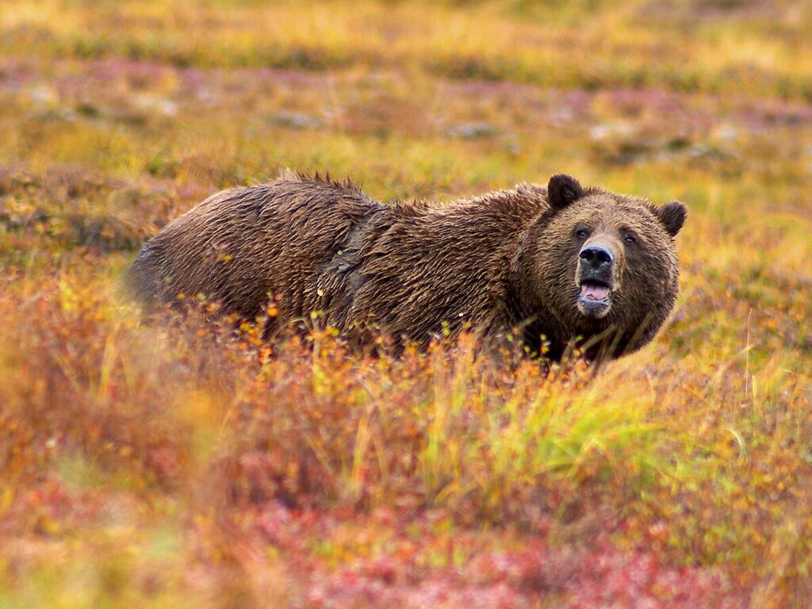
GrizzlybärDer Grizzlybär ist ein sehr großer Bär und lebt in den Wäldern und Bergen im Westen. Er hat ein braunes Fell und kräftige Pranken. Er frisst Beeren, Fische und kleine Tiere. Im Winter hält er einen langen Winterschlaf.
Grüne Wörter für die Appgroßer Bärbraunes FellWälder und Bergestarke PrankenWinterschlaf
In der App kannst du beim Essen das Foto nehmen oder dein Gericht selbst malen.
HamburgerDer Hamburger ist das bekannteste Essen aus den USA. In einem weichen Brötchen liegt eine Frikadelle aus Fleisch. Dazu kommen Käse, Salat, Tomate und Soße. Man kann ihn gut in der Hand halten und essen.
Grüne Wörter für die Appweiches BrötchenFrikadelleKäseSalatSoße
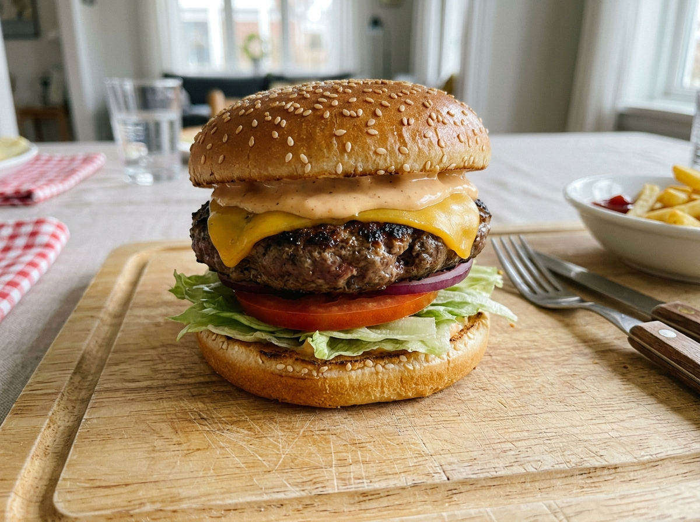
HotdogDer Hotdog ist eine warme Wurst in einem langen Brötchen. Obendrauf kommt gern Ketchup oder Senf. Besonders bei großen Sportspielen essen viele Menschen einen Hotdog. Man bekommt ihn an jedem Stand.
Grüne Wörter für die AppWurstlanges BrötchenKetchupSenfbeim Sport
PancakesPancakes sind dicke, weiche Pfannkuchen und werden zum Frühstück gegessen. Man stapelt mehrere übereinander auf den Teller. Darüber gießt man süßen Ahornsirup. Manchmal liegen auch Beeren obendrauf.
Grüne Wörter für die Appdicke Pfannkuchenzum FrühstückgestapeltAhornsirupsüß
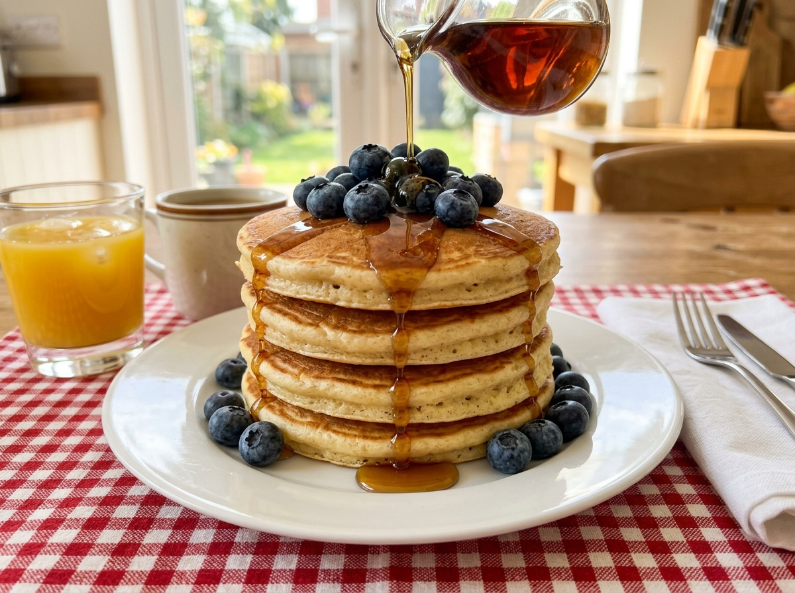
⚽ Gut zu wissen
Die Fußball-Nationalmannschaft der USA hat den Spitznamen Stars and Stripes, das bedeutet Sterne und Streifen, genau wie auf der Flagge. Sie spielt im weiß-blauen Trikot. In den USA sagt man zum Fußball nicht Football, sondern Soccer. Bei der WM 2026 sind die USA Co-Gastgeber, sie richten das Turnier zusammen mit Kanada und Mexiko aus. Einen WM-Titel hat das Team noch nie gewonnen, aber es ist fast immer dabei.
Grüne Wörter für die AppStars and Stripesweiß-blaues TrikotSoccerCo-GastgeberKanada und Mexiko
🌟 Profi-Wissen
Der bekannteste Spieler ist Christian Pulisic. Er spielt in Italien beim AC Mailand und ist ein schneller Stürmer. In den USA nennen ihn viele Captain America. 1994 richteten die USA die Weltmeisterschaft selbst aus. 2026 sind sie erneut Gastgeber.
Grüne Wörter für die AppChristian PulisicCaptain AmericaAC MailandWM-Gastgeber 1994Co-Gastgeber 2026
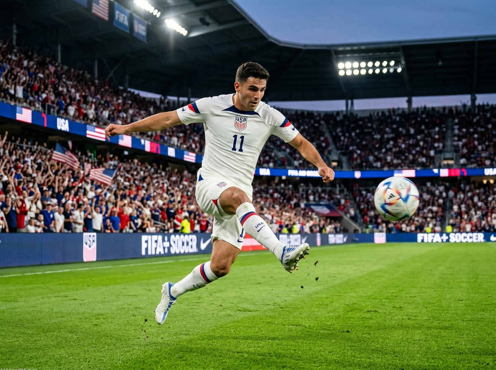
Schule in den USAIn den USA fahren viele Kinder mit einem gelben Schulbus zur Schule. In der Schule lernen sie auch viel Sport, oft gibt es eigene Mannschaften. Am Morgen stellen sich die Kinder oft vor die Flagge und sprechen einen Treuespruch, er heißt Pledge of Allegiance. Anders als bei uns tragen manche Kinder an ihrer Schule gleiche Kleidung.
Grüne Wörter für die Appgelber SchulbusSportFlaggePledge of Allegiancegleiche Kleidung
Halloween und SüßigkeitenAm 31. Oktober ist in den USA Halloween. Die Kinder verkleiden sich als Gespenster, Hexen oder Monster. Dann gehen sie von Haus zu Haus und rufen Trick or Treat. So sammeln sie viele Süßigkeiten ein. Vor den Häusern stehen leuchtende Kürbisse mit Gesichtern.
Grüne Wörter für die AppHalloweenverkleidenTrick or TreatSüßigkeitenKürbisse
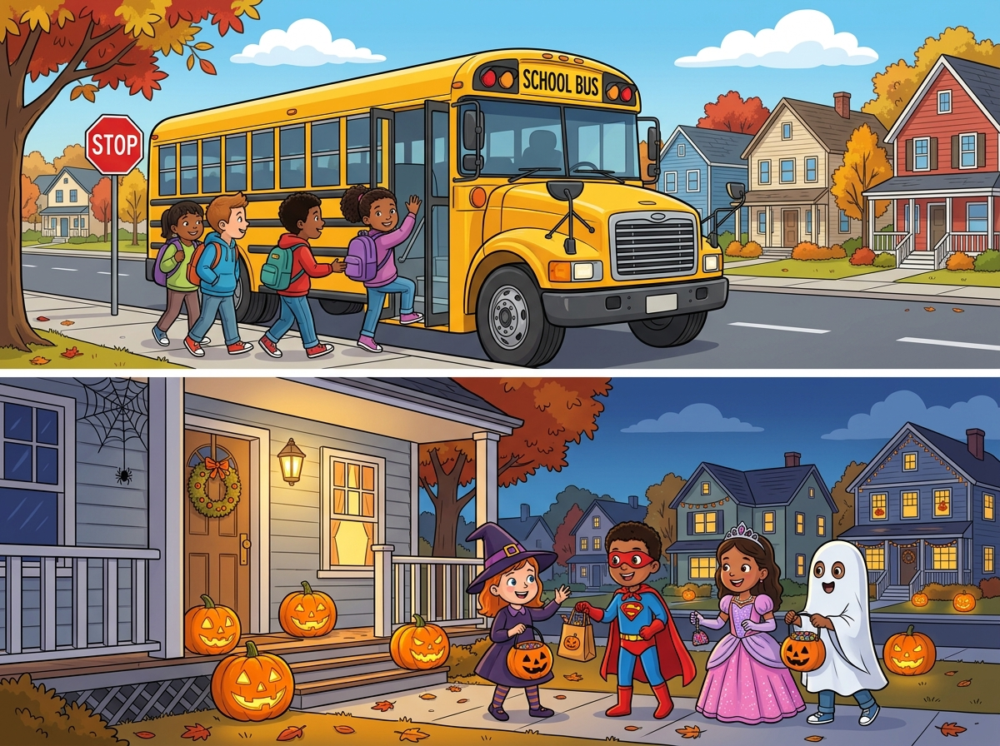